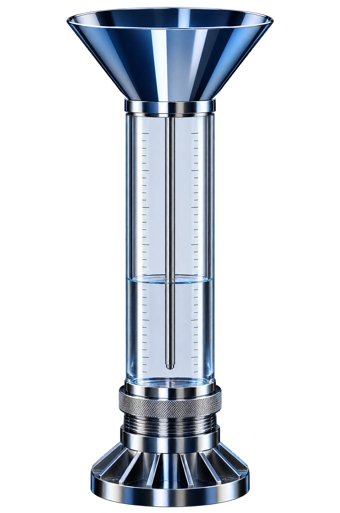

Sachez trois jours à l’avance ce que la météo va bloquer.
Auvent surveille la météo de vos chantiers et vous propose un autre planning avant les intempéries.
Mercredi, la dalle attendra jeudi.
Démonstration : Auvent est une marque fictive créée par Topiary.
Votre appli météo vous dit qu’il va pleuvoir. Auvent vous dit quoi faire sur chaque chantier.
À 6 h, vos chefs de chantier savent quoi faire.
Auvent compare chaque nuit la météo à votre planning. Chaque chef de chantier reçoit sa consigne sur son téléphone. Vous recevez sa réponse directement.
Pluie prévue mercredi, à Nantes
Limite du coulage
mardi 13 octobre
Les Bateliers, Nantes
Pas de coulage mercredi : il pleut de 9 h à 13 h. Mercredi, on monte les cloisons du RDC. On coule jeudi à 7 h.
Les Bateliers, Nantes
Pluie possible mercredi matin. On vous confirme le coulage demain à 6 h.
Votre planning change avant la pluie.
Exemple : cinq chantiers dans l’Ouest pendant une semaine de pluie. Rien ne bouge sans votre accord.
-
Trois tâches sont menacées. Le coulage de Nantes reste incertain. Vous prévenez la centrale à béton sans rien annuler.
-
Quatre tâches sont bloquées mercredi sur quatre chantiers.
-
Chaque tâche bloquée passe au premier jour possible. Un travail à l’intérieur prend sa place.
-
Vous validez d’un clic. Chaque chef de chantier reçoit son planning sur son téléphone. Vous voyez qui l’a lu.
C’est vous qui fixez les limites.
Auvent part des limites du métier. Vous les réglez selon votre matériel.
- Choisissez une tâche.
- Déplacez sa limite.
- Auvent recalcule la semaine du chantier.
Limite habituelle : 45 km/h
49 € HT par chantier et par mois
- Tous vos chefs de chantier sont inclus.
- Un chantier terminé ne se paie plus.
- Le premier chantier est offert pendant un mois.
Questions fréquentes
Qui décide d’arrêter un chantier ?
Vous. Auvent vous prévient et vous propose un planning. La décision reste la vôtre.
D’où vient la météo ?
De Météo-France. La prévision est calculée pour chaque chantier et mise à jour plusieurs fois par jour.
Et si la météo change pendant la nuit ?
Auvent vérifie de nouveau dans la nuit. Si le planning change, vous recevez un message avant 7 h.
Et pour le chômage intempéries ?
Auvent garde la météo heure par heure de chaque jour d’arrêt. Vous la joignez à votre déclaration.
Faut-il installer quelque chose ?
Non. Auvent fonctionne sur ordinateur et sur téléphone. Votre planning s’importe depuis Excel.